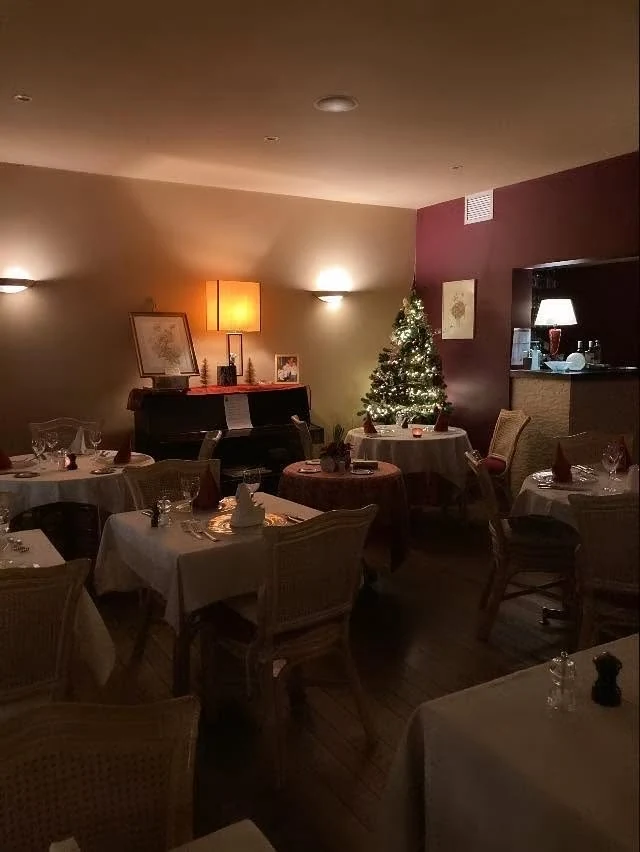
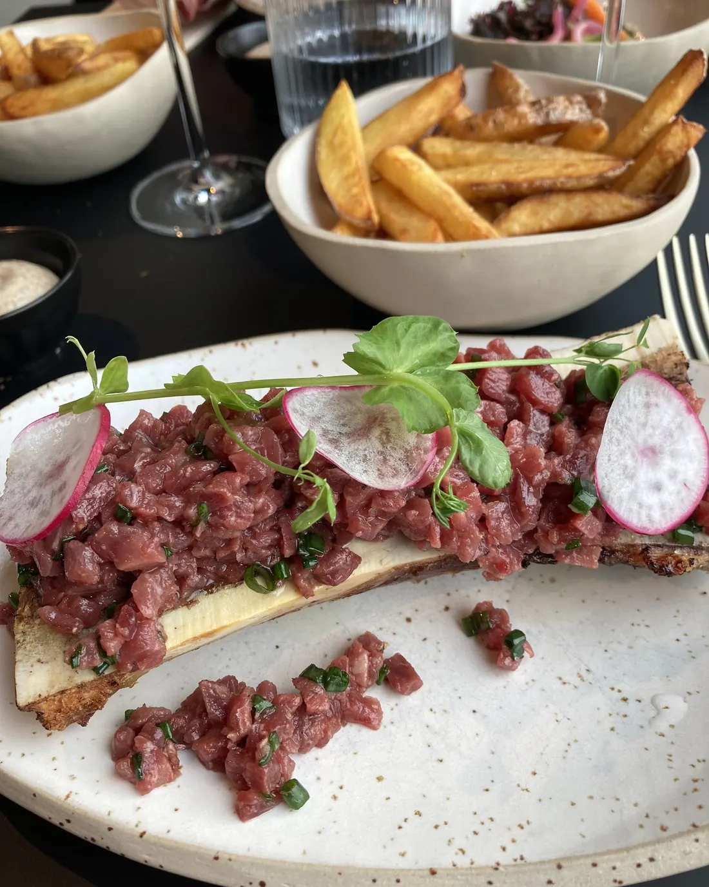
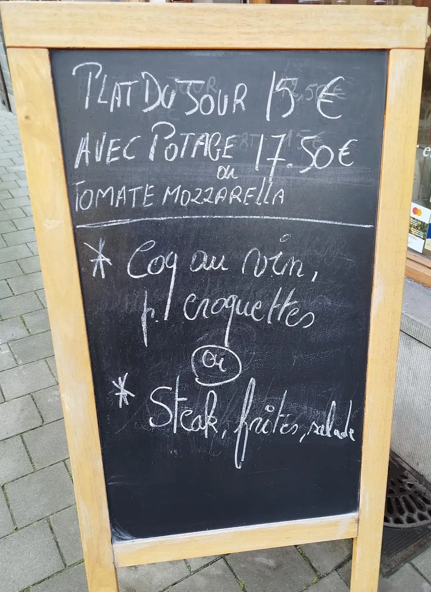
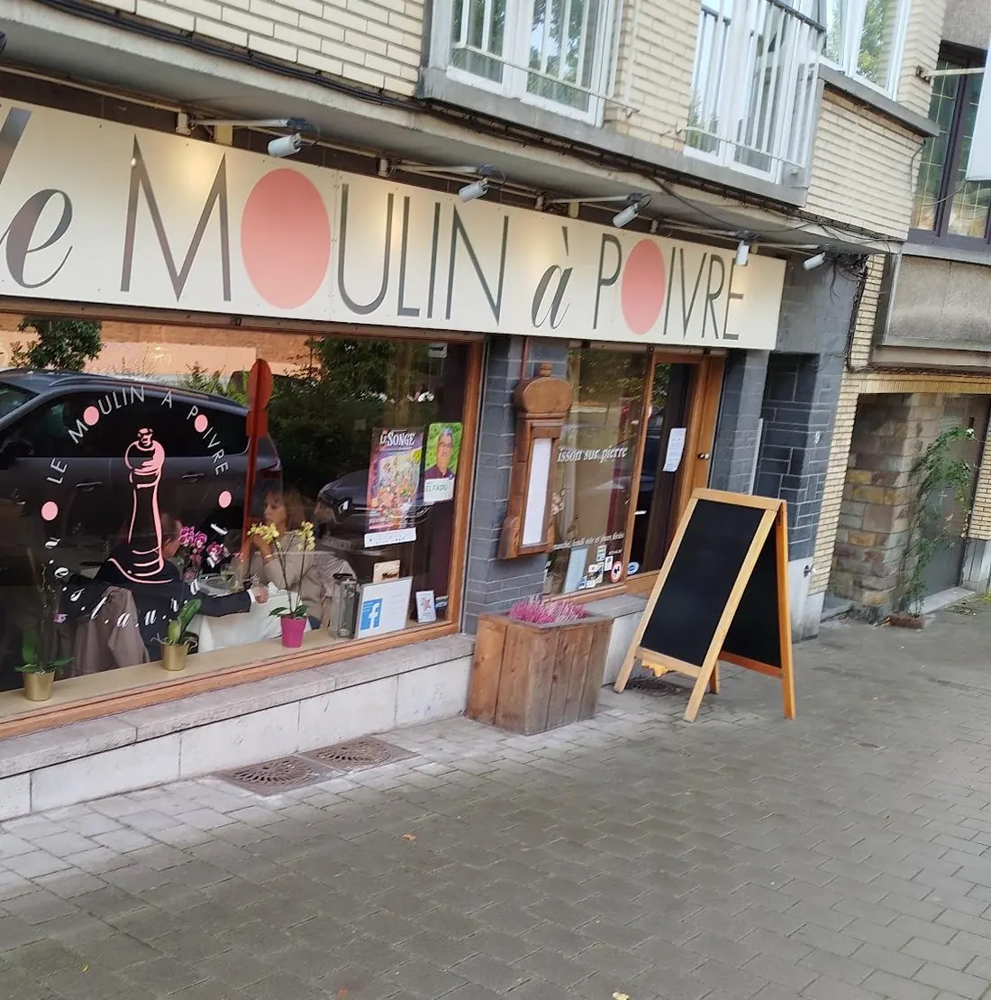
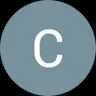

Restaurant belgo-français · Jette
Linda et Sami, aux fourneaux depuis 30 ans
Un tout petit restaurant de six tables, des grillades, la cuisson sur pierre et une ardoise de suggestions qui change. Le genre d'adresse où l'on vient en amoureux ou entre amis.
Du mardi au samedi, dès midi
Six tablesCuisson sur pierrePlat du jour 15 €


L'ardoise
Le plat du jour à 15 €, écrit à la craie devant la porte
Chaque jour, l'ardoise sort sur le trottoir avec le plat du moment. Le reste de la carte tourne autour des grillades et de la cuisson sur pierre, et les suggestions changent assez souvent pour que les habitués reviennent les découvrir.

Ce jour-là, à l'ardoise
Plat du jour
- Le plat seul
- 15 €
- Avec potage ou tomate mozzarella
- 17,50 €
Coq au vin, pommes croquettes
ouSteak, frites, salade
Recopié de l'ardoise photographiée devant le restaurant. Les plats changent : celui du jour se lit à la craie.
Grillades et cuisson sur pierre
La spécialité de la maison, annoncée sur la porte vitrée.
« Spécialités : des grillades. »Marc M., avis Google 5 étoiles
Nous avons pris un coq au vin et un steak frites salade, en suggestion comme plat du jour. C'était excellent et le prix tout à fait raisonnable (15 Euros le plat du jour).
Marc M., avis Google 5 étoilesSix tables seulement
Gardez-vous une table
Choisissez le jour, l'heure et le nombre de couverts. Les créneaux suivent les horaires du restaurant : du mardi au samedi, et le mercredi à midi seulement.
« Nous y venons régulièrement et ne sommes jamais déçu de la nouvelle carte des suggestions. »Valérie B., sur Google, il y a 11 mois
Fermé le dimanche et le lundiPlutôt par téléphone ? 02 479 58 08
La salle
Six tables, des nappes blanches, la patronne aux fourneaux
Derrière la vitrine au moulin rose, une petite salle aux murs bordeaux et aux lampes douces. La patronne est aux fourneaux, Linda et Sami vous reçoivent : on y vient comme chez des amis, sans être les uns sur les autres.

Il n'y a pas trop de tables, on n'est pas les uns sur les autres, l'ambiance est cosy […] Pour nous, c'est comme se retrouver chez des amis.

Christine C., avis Google 5 étoilesSix tables
« Un tout petit restaurant cosy avec 6 tables. »Marc M., Google
La patronne en cuisine
« La patronne aux fourneaux 🙂 Accueil parfait, personnalisé […] »Cabinet dentaire G., Google
Linda et Sami
« Linda et Sami vous concoctent de délicieux plats belgo-français depuis 30ans. »Leur page Facebook
« Sympa et pas cher »
L'autocollant du guide est collé sur la vitrine, à côté des cartes acceptées (Visa, Mastercard, Maestro).
Ils l'ont écrit sur Google
« Le genre de restaurant où on a envie de se retrouver pour passer un bon moment […] »
Du mardi au samedi, dès midi
Fermé le dimanche et le lundi
| lundi | fermé |
|---|---|
| mardi | 12 h – 21 h 30 |
| mercredi | 12 h – 13 h 45le midi seulement |
| jeudi | 12 h – 21 h 30 |
| vendredi | 12 h – 22 h |
| samedi | 12 h – 22 h |
| dimanche | fermé |
Rue Gustave Gilson 9, 1090 Jette · à deux pas du CHU Brugmann
Les nouvelles du restaurant sur Facebook
Visa, Mastercard et Maestro acceptées